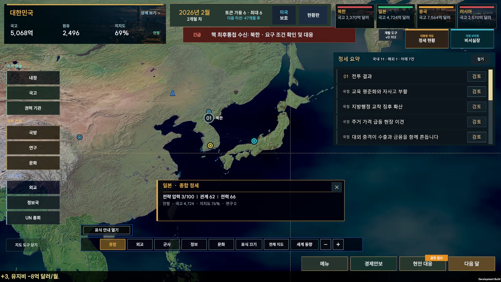
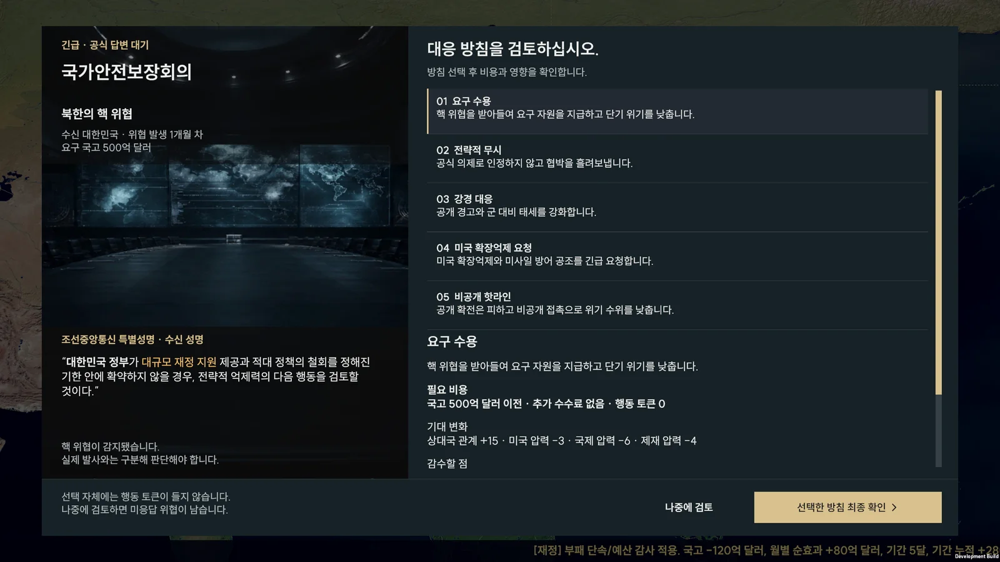

UI · v0.062 → v0.063
720p에서 누르기 어려운 버튼
41건→0건48px 미만 버튼
- 원인
- 화면이 작아지면 캔버스 전체가 줄면서 버튼 실제 크기가 최소 기준 아래로 내려감
- 조치와 확인
- 조밀한 화면을 2열 카드 구조로 바꾸고, 720p부터 울트라와이드까지 4개 해상도 21개 화면을 다시 측정
동북아 대전략 게임 Five Powers를 만들면서, 검증은 AI 자동 플레이와 감사에 맡기고 기준을 정하고 판정하는 일을 직접 했습니다. 아래는 그 과정에서 받은 빌드별 QA 보고서 3건(총 142장)을 한 페이지로 정리한 것입니다.

8월 마지막 주에 세 번의 검증 회차가 있었고, 각 회차는 이전 회차가 남긴 문제를 고치는 데서 시작했습니다.
5개국 장기 자동 플레이 692개월, 치명 결함 0건. 10개 관문 중 9개 통과. 남은 1개는 사람 대상 UX 검사.
사건 반복, 국고 인플레이션, 720p 작은 버튼을 수정. 처음으로 플레이어 승리가 3개국에서 성립.
1,500턴 자동 플레이, 자동 테스트 510건, 5개 해상도 UI 감사, 2시간 안정성 검사. 최종 빌드 0.071.
지인 테스트·소규모 CBT를 시작할 기반까지 도달. 이후 개선 사항을 정리하는 단계에서 멈춤.
반복 검증은 AI가 대신할 수 있지만, 무엇을 통과로 볼지와 다음에 무엇을 할지는 사람이 정해야 한다고 봤습니다.
기획서를 1순위 기준 문서로 두고, 통과 조건과 측정 지표를 먼저 정함
직접5개국 장기 자동 플레이, 해상도별 화면 감사, 회귀 테스트, 저장·불러오기 왕복
AI (Codex)통과 · 부분 · 미실시로 나누고, 숫자가 엇갈리면 어느 실행을 기준으로 볼지 정함
직접남은 문제를 우선순위로 정리해 다음 빌드 작업 범위로 넘김
직접5개국 × 전략 2가지 × 150턴, 총 10개의 새 게임을 처음부터 끝까지 자동으로 플레이했습니다.
10개 시나리오 전부 150턴 완주, 실행 오류 0건
실패 0, 건너뜀 0
24·60·120턴 지점에서 국가별 3회씩, 상태 손실 없음
720p ~ 3440×1440, 5개 해상도에서 자동 경고 0
10분 간격 13회 측정, 메모리 증가 +0.01%
44개 사건 묶음, 선택지 639개, 문장 1,433개를 데이터로 관리

이 보고서들은 Codex가 자동 플레이와 감사를 실행해 작성한 내부 문서입니다. 이 페이지는 그중 판정과 결정에 해당하는 내용을 골라 정리했고, 성능 측정치나 내부 파일 경로처럼 개발용 세부는 뺐습니다. 게임은 v0.102에서 개선 사항을 정리하는 단계에 멈춰 있습니다.